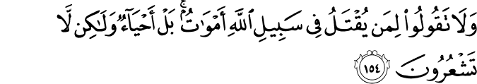

আপনি রাস্তা দিয়ে যাচ্ছেন। সামনে হঠাৎ দেখলেন, দুইজন মস্তান এসে এক মহিলার সাথে অশালীন ব্যবহার করছে। তাঁর জিনিসপত্র কেড়ে নিচ্ছে। তাঁর সম্ভ্রমহানি করছে। আশেপাশে মানুষগুলো দেখেও না দেখার ভান করে যে যার মতো হেঁটে যাচ্ছে। আপনার স্ত্রী রাগে, ঘৃণায় দাঁতে দাঁত ঘষে বললেন, “দিনদিন মানুষ কী পশু হয়ে যাচ্ছে? দিনদুপুরে একজন মহিলার সাথে এরকম হচ্ছে, আর কেউ এগিয়ে আসছে না?” আপনার মাথায় রক্ত উঠে গেল। আপনি শার্টের হাতা গুটিয়ে তাদের দিকে এগোচ্ছেন, আর সাথে সাথে আপনার স্ত্রী আপনাকে শক্ত করে জাপটে ধরে চোখ লাল করে তাকিয়ে বললেন, “কী করছ! তোমার কি মাথা খারাপ নাকি? দেখছ না লোকগুলো মস্তান? আমাকে বিধবা করে দেওয়ার ইচ্ছা আছে নাকি? এই মূহুর্তে বাসায় চলো।”
একদিন হঠাৎ রাস্তায় হইচই শুনে আপনি বাসার বারান্দা দিয়ে নীচে তাকিয়ে দেখলেন, কয়েকজন লোক একজন টুপি-দাড়িওয়ালা লোককে ধরে ব্যাপক পেটাচ্ছে। লোকটা বাঁচাও, বাঁচাও বলে গোঙাচ্ছে, কিন্তু আশেপাশে কেউ এগিয়ে আসছে না। একটু দূরে মানুষজন আড়চোখে দেখে, দ্রুত না দেখার ভান করে চলে যাচ্ছে। আপনার বাবা-মা আপনার পাশে দাঁড়িয়ে এই দৃশ্য দেখছেন, আর আফসোস করছেন, “ইস, দেশটার কী অবস্থা! এরা দিনের বেলা সবার সামনে যা খুশি করে বেড়াচ্ছে, কেউ কিছু বলছে না। সব কাপুরুষ হয়ে গেছে।” আপনি সাথে সাথে হাতে একটা লাঠি নিয়ে নীচে যেতে নিলেন, আর আপনার বাবা-মা চিৎকার করে উঠলেন, “কোথায় যাচ্ছ? খবরদার, ঘরের বাইরে বের হবে না। ওরা তোমাকে মেরে ফেলবে। আমি তোমার বাবা, আমি বেঁচে থাকতে তোমাকে নীচে যেতে দিবো না।”
একটা সময় ছিল, যখন একদল মানুষ কোনো ধরনের শারীরিক, মানসিক অত্যাচার, মৃত্যুর পরোয়া না করে, অন্যায়ের প্রতিবাদ করে গেছেন, ন্যায় প্রতিষ্ঠা করে গেছেন। স্বামী-স্ত্রী একসাথে যুদ্ধে গেছেন। বাবা-ছেলে একে অন্যের পিঠে পিঠ লাগিয়ে তলোয়ার নিয়ে শত্রুর বিরুদ্ধে যুদ্ধ করেছেন। মা নিজের হাতে ছেলেকে যুদ্ধের পোশাকে সাজিয়ে যুদ্ধ করতে পাঠিয়েছেন। তাদের কারণে পুরোপুরি নষ্ট হয়ে যাওয়া একটা জাতির হাত থেকে মানুষ মুক্তি পেয়েছে। তাঁদের আত্মত্যাগের কারণেই আজকে আমরা ইসলাম পেয়েছি, নিজেদেরকে মুসলিম বলে দাবি করতে পারছি। তারা আল্লাহর تعالى কাছে এতটাই সন্মানিত যে, আল্লাহ تعالى তাদেরকে ‘মৃত’ বলতে পর্যন্ত আমাদেরকে কঠিন নিষেধ করেছেন—
{kind=link}
আল্লাহর تعالى রাস্তায় যাদেরকে হত্যা করা হয়েছে, তাদেরকে মৃত বলবে না। না! তারা জীবিত, বরং তোমরাই তা উপলব্ধি কর না। [আল-বাক্বারাহ ১৫৪]
{kind=link}
মৃত্যু-ভয় রাজনীতিতে একটি শক্তিশালী হাতিয়ার। বিভিন্ন দেশে রাজনৈতিক দলগুলো ক্ষমতায় আসার জন্য এবং ক্ষমতায় টিকে থাকার জন্য দেশের মানুষের মৃত্যু-ভয়কে অপব্যবহার করেছে। এর সবচেয়ে বড় উদাহরণ হল ২০০৪ সালের আমেরিকার নির্বাচনে জর্জ বুশের বিজয়। নির্বাচনের সময় বুশ বার বার সেপ্টেম্বর ২০০১ এর টুইন টাওয়ার ধ্বংসের ভিডিও প্রচার করে আমেরিকানদের ভেতরে মৃত্যু-ভয় ঢুকিয়ে দিয়ে, নিজেকে তাদের রক্ষাকর্তা হিসেবে উপস্থাপন করেছে। যার ফলাফল হচ্ছে তার ব্যাপক ভোটে বিজয়। অথচ ২০০১ এর আগে বুশের অবস্থা ছিল একেবারেই খারাপ। এমনকি তার দলের ভেতরেও তার গ্রহণযোগ্যতা একেবারেই কমে গিয়েছিল, তাকে অপসারণের চিন্তা চলছিল। কীভাবে এই রাজনৈতিক দলগুলো মানুষের মৃত্যু-ভয়কে পুঁজি করে ইলেকশনে জেতে, তা নিয়ে আমেরিকান সাইকোলজি এসোসিয়েশনের (www.apa.org) একটি গবেষণা পত্রে বিস্তারিত প্রকাশ করা হয়েছে।[২৮৭] এই ধরনের ঘটনা শুধু আমেরিকাতেই ঘটে না, আজকাল প্রায় প্রতিটি দেশেই ঘটছে।
১৯৮৬ সালে Jeff Greenberg, Tom Pyszczynski, Sheldon Solomon নামের তিনজন সোশাল সাইকলজিস্ট ‘টেরর ম্যানেজমেন্ট থিওরি’ নামে একটি থিওরি প্রকাশ করেন।[২৮৮] তারা নানা গবেষণা করে দেখেন, কীভাবে মৃত্যু ভয় মানুষের ন্যায়-অন্যায়ের ধারণা, সঠিক সিদ্ধান্ত নেওয়ার সম্ভাবনা, রাজনীতিবিদদের ভোট দেওয়ার ইচ্ছা ইত্যাদিকে প্রভাবিত করে। তাদের গবেষণার ফলাফল অবাক করে দেওয়ার মতো। এই গবেষণাগুলো সাইন্টিফিক আমেরিকান জার্নালে প্রকাশিত হয়েছে—
তারা ২২ জন জজের উপর পরীক্ষা করে দেখেন যে, তাদেরকে যদি কিছুক্ষণ তাদের মৃত্যুর ব্যাপারে কল্পনা করতে দেওয়া হয়, লিখতে বলা হয়, তারপর তাদেরকে কোনো আসামীকে বিচার করতে দেওয়া হয়, তাদের বিচার করার পদ্ধতি উল্লেখযোগ্যভাবে পালটে যায়। জজরা, যাদেরকে কিনা বছরের পর বছর কঠিন ট্রেনিং দেওয়া হয়, যেন তারা প্রচণ্ড মানসিক, রাজনৈতিক, অর্থনৈতিক চাপের মধ্যে থেকেও নিরপেক্ষ সিদ্ধান্ত নিতে পারেন, তারাও নিজেদের মৃত্যু সম্পর্কে গভীরভাবে চিন্তা করে প্রভাবিত হয়ে যান।[২৮৮]
আরেকটি গবেষণায় দেখা যায় যে, তিনজন কাল্পনিক রাজনৈতিক চরিত্র তৈরি করে মানুষকে যখন বলা হয় ভোট দিতে, মানুষ সাধারণত তাকেই বেশি ভোট দেয়, যে সবচেয়ে বেশি চিন্তা-ভাবনা, পরিকল্পনা করে দেশ পরিচালনা করার জন্য নির্বাচনী প্রচারণা করে। কিন্তু যখন মানুষকে কিছুক্ষণ নিজেদের মৃত্যু সম্পর্কে গভীরভাবে কল্পনা করতে দেওয়া হয়, লিখতে বলা হয়, তারপর তাদেরকে সেই তিন কাল্পনিক রাজনীতিবিদদের ভোট দিতে বলা হয়, সংখ্যাগরিষ্ঠ মানুষ তাকেই ভোট দেন, যে কিনা ‘সন্ত্রাস নির্মূলে বদ্ধপরিকর’ থাকবে বলে গলাবাজি করে নির্বাচনী প্রচারণা করে। সাধারণ মানুষ মৃত্যুকে এতটাই ভয় পায় যে, যাকে কিনা কখনো ঠাণ্ডা মাথায় চিন্তা করে কেউ ভোট দেবে না, তাকেই মানুষ ভোট দেয়, যখন ভেতরে মৃত্যুর ভয় ঢুকে যায়।[২৮৮]
মিডিয়াতে মৃত্যু ভয়কে প্রচার করা হয় মানুষকে মানসিকভাবে বিকলাঙ্গ করে দেওয়ার জন্য। যেমন, মিডিয়া ব্যাপকভাবে পশ্চিমাদের বিভিন্ন নির্যাতন কেন্দ্রে ভয়ঙ্কর সব নির্যাতনের ঘটনা, মুসলিমদের ধরে নিয়ে নির্যাতন, সামরিক এবং পুলিশ বাহিনীদের নৃশংসতার উদাহরণ প্রচার করে। এই সব ভয়ঙ্কর প্রচারণা দেখে মানুষের ভেতরে প্রচণ্ড ভয় ঢুকে যায়। তারা কোনো ধরনের অন্যায়ের বিরুদ্ধে সোচ্চার হওয়ার আগে একশ বার ভেবে দেখে। কেউ সাহস করে যদি কিছু করতেও যায়, তার পরিবারের সদস্যদের মধ্য থেকে আসে প্রচণ্ড বাধা। মিডিয়ার মগজ ধোলাইয়ের শিকার পরিবারের সদস্যরা নির্যাতনের ভয়ে, মৃত্যুর ভয়ে দিশেহারা হয়ে যায়। অন্যায়ের প্রতিরোধ করা তো দূরের করা, নিজেদের জন্য স্বার্থপরের মতো সুখী জীবনের আকাঙ্ক্ষায় উল্টো অন্যায়ের সমর্থনে কাজ করা শুরু করে দেয়।
১৯৭০ সালে স্কলার Herbert Simon একটি ধারণার প্রচলন করেন: মনোযোগ অর্থনীতি।[২৮৯] আজকের আধুনিক যুগে মানুষের উপর চারিদিক থেকে তথ্য বর্ষণ হচ্ছে। টিভি, খবরের কাগজ, রেডিও, মোবাইল ফোন, ইন্টারনেট — সব দিক থেকে মানুষ তথ্যের বন্যায় ভেসে যাচ্ছে। একারণে মানুষের মনোযোগ পাওয়া খুবই কঠিন কাজ হয়ে গেছে। এই কঠিন ‘মনোযোগ অর্থনীতিতে’ যে কোনো উপায়ে মানুষের মনোযোগ পাওয়ার জন্য এক নোংরা প্রতিযোগিতা শুরু হয়েছে: ভয়ের ব্যবহার। হলুদ সাংবাদিকতায় মানুষের মনোযোগ নিয়ে ব্যবসা করার জন্য মানুষ যা খায়, সেটাই তাকে খাওয়ায়। রাজনৈতিক পৃষ্ঠপোষকতায় তারা মানুষকে খবর বিকৃত করে দেখায়, মিথ্যা খবর ছড়ায়, শিরোনাম ভর্তি থাকে যত খারাপ খবর, ভয়ের খবর। মানুষকে সব সময় ভয়ে, আতংকে রাখার এক অসুস্থ প্রতিযোগিতায় মিডিয়া ব্যস্ত।[২৮৯] এর ফলাফল ভয়ঙ্কর: মানুষ দিনে দিনে মেরুদণ্ডহীন হয়ে যাচ্ছে। আজকাল ঘর থেকে বের হতেই মানুষ দুশ্চিন্তা করে। সমাজ, দেশের জন্য ভালো কিছু করা তো বহু দূরের কথা।
রাজনীতিতে মানুষকে মানসিকভাবে বিকলাঙ্গ করে রাখার আরেকটি মোক্ষম উপায় হলো: মানুষকে জীবনযুদ্ধে ব্যস্ত রাখা। মানুষ যদি সংসারের ঘানি টানতে হিমসিম খেতে থাকে, দিনরাত কঠোর পরিশ্রম করে কোনো মতে মাস চলার মতো অর্থ জোগাড় করতে পারে, তাহলে সে কোনো বড় উদ্দেশ্যে ঐক্যবদ্ধ হয়ে ন্যায়ের জন্য কাজ করার তাগিদ পাবে না। একারণে ইতিহাসে আমরা অনেক স্বৈরাচার সরকার দেখতে পাই, যারা সুপরিকল্পিতভাবে দেশের বেশিরভাগ মানুষের জীবনকে অত্যন্ত কঠিন করে দেয়, দেশের অর্থনীতি পঙ্গু করে দেয়, দেশের বেশিরভাগ মানুষকে দারিদ্রতার সীমার কাছাকাছি রাখে।[২৯০] প্রতিদিনের ঘানি টানার পর তখন আর মানুষের অন্য কিছু নিয়ে চিন্তা করার, কাজ করার শক্তি, মানসিকতা কিছুই থাকে না।
আর দেশের যেই মানুষগুলোর যথেষ্ট টাকা পয়সা আছে, যারা হয়তো বা একসাথে হয়ে ন্যায়ের জন্য সংগ্রাম শুরু করেও দিতে পারে, তাদের জন্য অঢেল বিনোদনের ব্যবস্থা করে দেওয়া হয়। তাদের জন্য ফাইভ স্টার হোটেল, দামি রেস্টুরেন্ট, প্রাইভেট ক্লাব, গলফ কোর্স, দামি গাড়ি, শত টিভি চ্যানেল, রঙ বেরঙের পানি, স্ট্যাটাসের প্রতিযোগিতার ব্যবস্থা করাটা সরকারের জন্য একটি জরুরি বিষয় হয়ে দাঁড়ায়। এত সব বিনোদনে বুদ হয়ে থেকে তারা আর তাদের ফ্রি সময়ে ভালো কিছু, সংস্কারমূলক কিছু করার চিন্তাই করতে পারে না। এভাবে রাজনীতিবিদরা দেশের বিত্তহীন এবং বিত্তবান দুই দিককেই পঙ্গু করে দিয়ে, আন্দোলনের ঝুঁকি দূর করে ফেলে, তারপর নিশ্চিন্তে দুর্নীতি, ইচ্ছেমত অর্থ আত্মসাৎ, যতখুশি অন্যায় করে পার পেয়ে যায়। কেউ কিছুই বলে না। বিত্তহীনরা খাওয়া জোগাড় করতে ব্যস্ত থাকে, আর বিত্তবানরা খেতে খেতে অসুস্থ হয়ে চিকিৎসায় ব্যস্ত থাকে।
মানুষের যদি এরকম কাপুরুষের মতো মৃত্যু ভয় না থাকতো, তাহলে আজকে সমাজে প্রকাশ্যে, গোপনে এত অন্যায় করার কথা কেউ চিন্তাও করতো না। আজকে দুষ্কৃতিকারীরা রাস্তায় বের হয়ে যা খুশি করতে পারে, কারণ তারা জানে কাপুরুষ জনতা তাদেরকে কিছুই করবে না। আজকে নিরাপত্তা কর্মীরা দেদারসে ঘুষ খায়, সম্পত্তি লুট করে, কারণ তারা জানে সাধারণ মানুষ জেলে গিয়ে মার খাওয়ার ভয়ে তাদেরকে কিছুই করবে না। দুর্নীতিবাজরা দেশের কোটি টাকার সম্পত্তি আত্মসাৎ করে দিতে পারে, কারণ তারা জানে ট্রান্সফার হয়ে যাওয়ার ভয়ে কোনো সরকারি কর্মকর্তা মুখ খুলবে না, কোনো নিরাপত্তা কর্মী তাদের বিরুদ্ধে সাক্ষ্য দেবে না। ১৭ কোটি মানুষকে মাত্র লাখ খানেক দুর্নীতিবাজ মানুষ লুটেপুটে খাচ্ছে, যা খুশি করছে, কারণ সেই দুর্নীতিবাজরা জানে যে, মানুষের জানের মায়া বড়ই কঠিন। এরা বুঝে গেছে: দেশের মেরুদণ্ডহীন জনতা মৃত্যু ভয়ে বিকলাঙ্গ হয়ে গেছে, জনতা তাদেরকে কিছুই করবে না।
একারণেই যারা মৃত্যুকে ভয় না করে আল্লাহর تعالى পথে জীবন দেয়, তাদেরকে আল্লাহ تعالى এত বড় সম্মান দিয়েছেন। এই সব মানুষরা আমাদের মত স্বার্থপর, মেরুদণ্ডহীন নন। তারা সবসময় শুধু নিজের এবং নিজের পরিবারের ভালো চান না, একই সাথে তারা অন্যের এবং অন্যের পরিবারের, সমাজের, জাতির ভালো চান। আমাদের মতো সব অন্যায় মুখ বুঝে সহ্য করে বাবা-মা, স্ত্রী এবং বাচ্চাদেরকে কোনোমতে খাইয়ে পরিয়ে, গবাদি পশুর মতো এই জীবনটা কোনোমতে পার করে দেওয়া, তার পর বুড়ো বয়সে অসুখে ধুঁকে ধুঁকে মারা যাওয়া — এভাবে তারা জীবন পার করতে মোটেও রাজি নন। এই সব মহান মানুষদের আত্মত্যাগের কারণেই সমাজের সংস্কার হয়, অন্যায়ের দমন হয়, মানবজাতি সামনে এগিয়ে যায়। একারণেই আল্লাহ تعالى কু’রআনে এদেরকে নিয়ে এত গর্ব করেন, আর আমাদের মতো স্বার্থপরদের ধিক্কার দেন।
আমরা একবারই মারা যাবো, তাই মৃত্যু ভয়ে জীবনটা মানসিকভাবে বিকলাঙ্গের মত পার করার কোনো মানে হয় না। আমার মৃত্যু আর একটি গবাদি পশুর মৃত্যু যেন একই ধরনের উদ্দেশ্যহীন, আদর্শহীন না হয়।
এর চেয়ে অন্যায়ের বিরুদ্ধে রুখে দাড়াই। রাস্তায় কোনো অন্যায় হতে দেখলে, কেউ না এগিয়ে আসলেও নিজে প্রথমে এগিয়ে যাই। চাকরিতে ট্রান্সফার হয়ে যাওয়ার ভয়ে মুখ বন্ধ রেখে, নিজে এবং সন্তানদের হারাম না খাইয়ে উপরের তলার অন্যায় ফাঁস করে দেই, সংবাদিকদের জানিয়ে দেই। ফেইসবুক প্রোফাইলের আড়ালে লুকিয়ে গলাবাজি না করে, পরিবারে, সমাজে ঘটে যাওয়া অন্যায়গুলোকে সামনা সামনি মোকাবেলা করি। একজন একজন করে এগিয়ে আসলে, একসময় দশ জন, একশ জন, হাজার জন এগিয়ে আসবে। একটা সময় দুর্নীতিবাজরা বুঝে যাবে যে, এই দেশের মানুষরা আজকাল আর মৃত্যুকে ভয় করে না। বরং তারাই তখন নিজেদের অন্যায়ের জন্য ধরা পড়ে যাওয়ার ভয়ে আর রাতে ঘুমাতে পারবে না, মৃত্যু ভয়ে দুর্বল হয়ে যাবে।
শুধু খিলাফা প্রতিষ্ঠা করার জন্য জিহাদ না করেও আরো হাজারটা উপায়ে জিহাদ করা যায়। দেশকে কোটি টাকার জালিয়াতি থেকে বাঁচানোর জন্য আন্দোলন করা জিহাদ। অন্যের স্ত্রী, বোনকে সম্ভ্রমহানি থেকে বাঁচানোর জন্য নিজের হাত দিয়ে প্রতিহত করা জিহাদ। হাজারো মানুষকে ফরমালিন দেওয়া বিষাক্ত খাবার খাওয়া থেকে বাঁচানোর জন্য সংগ্রাম করা জিহাদ। সংবাদপত্রে অন্যায়ের বিরুদ্ধে কলম ধরা জিহাদ। রোহিঙ্গা মুসলিমদের অত্যাচার থেকে বাঁচানো জিহাদ। সমাজের সংস্কার, অন্যায়ের দমন, সবলের বিরুদ্ধে দুর্বলের সহায় —এরকম শত শত ইসলাম সম্মত উপায়ে একজন মুসলিম জিহাদ করতে পারে। এধরনের জিহাদ বরং নিশ্চিত মনে করা যায়, কারণ এগুলো করতে গিয়ে ইসলামী দলগুলো এবং রাজনৈতিক দলগুলোর দ্বারা প্রতারিত হওয়ার সম্ভাবনা নেই।[২৯৪] [২৯৫] [২৯৬]
এধরনের কাজের মাধ্যমে সমাজের, দেশের, জাতির সংস্কার হবে। এই সংস্কার করতে গিয়ে আমরা যদি মারাও যাই, সেই মৃত্যু হবে শহীদের।[২৯৩] আমাদের সন্তানেরা আমাদেরকে নিয়ে গর্ব করবে। মানুষ প্রাণখুলে আমাদের জন্য দু’আ করবে। আর সবচেয়ে বড় কথা আল্লাহ তখন আমাদেরকে নিয়ে বলবেন—
না! তারা জীবিত, বরং তোমরাই তা উপলব্ধি কর না।
সূত্র:
- [১] নওমান আলি খানের সূরা আল-বাকারাহ এর উপর লেকচার এবং বাইয়িনাহ এর কু’রআনের তাফসীর।
- [২] ম্যাসেজ অফ দা কু’রআন — মুহাম্মাদ আসাদ।
- [৩] তাফহিমুল কু’রআন — মাওলানা মাওদুদি।
- [৪] মা’রিফুল কু’রআন — মুফতি শাফি উসমানী।
- [৫] মুহাম্মাদ মোহার আলি — A Word for Word Meaning of The Quran
- [৬] সৈয়দ কুতব — In the Shade of the Quran
- [৭] তাদাব্বুরে কু’রআন – আমিন আহসান ইসলাহি।
- [৮] তাফসিরে তাওযীহুল কু’রআন — মুফতি তাক্বি উসমানী।
- [৯] বায়ান আল কু’রআন — ড: ইসরার আহমেদ।
- [১০] তাফসীর উল কু’রআন — মাওলানা আব্দুল মাজিদ দারিয়াবাদি
- [১১] কু’রআন তাফসীর — আব্দুর রাহিম আস-সারানবি
- [১২] আত-তাবারি-এর তাফসীরের অনুবাদ।
- [১৩] তাফসির ইবন আব্বাস।
- [১৪] তাফসির আল কুরতুবি।
- [১৫] তাফসির আল জালালাইন।
- [২৮৭] WINERMAN, LEA. The politics of mortality. [online] Available at: http://www.apa.org/monitor/jan05/mortality.aspx [Accessed 3 May 2015].
- [২৮৮] Scientificamerican.com, (2015). Fear, Death and Politics: What Your Mortality Has to Do with the Upcoming Election. [online] Available at: http://www.scientificamerican.com/article/fear-death-and-politics/ [Accessed 3 May 2015].
- [২৮৯] Boyd, d. (2015). The ethics of fear and how it undermines an informed citizenry | Poynter.. [online] Poynter.org. Available at: http://www.poynter.org/news/mediawire/192509/fear-undermines-an-informed-citizenry-as-media-struggles-with-attention-economy/ [Accessed 3 May 2015].
- [২৯০] DNews, (2015). How Dictators Keep Control : DNews. [online] Available at: http://news.discovery.com/human/dictators-control-psychology-111221.htm [Accessed 3 May 2015].
- [২৯৩] Islamqa.info, (2015). Will a Muslim who is killed wrongfully or treacherously or as a result of his house collapsing on him be a martyr? – islamqa.info. [online] Available at: http://islamqa.info/en/129214 [Accessed 14 May 2015].
- [২৯৪] Onislam.net, (2015). Jihad Against Local Injustice and Corruption. [online] Available at: http://www.onislam.net/english/shariah/contemporary-issues/interviews-reviews-and-events/412138-jihad-against-local-injustice-and-corruption.html?Events= [Accessed 14 May 2015].
- [২৯৫] Onislam.net, (2015). Jihad Between Defense and Attack. [online] Available at: http://www.onislam.net/english/shariah/contemporary-issues/interviews-reviews-and-events/412141-al-qaradawis-fiqh-of-jihad-book-review-411.html?Events= [Accessed 14 May 2015].
- [২৯৬] Islamawareness.net, (2015). Types of Jihad. [online] Available at: http://www.islamawareness.net/Jihad/types_jihad.html [Accessed 14 May 2015].